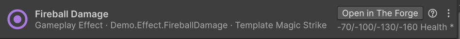

The header
An inspector opens with a header that stays at the top of the Inspector while the content scrolls under it.

An inspector's header: the asset's icon, name, type and tag, its summary, and its buttons.
| Part | What it shows or does |
|---|---|
| Icon | The type's icon, or the asset's own texture where it has one: the one under its Primary tag, else its first. |
| Name | The asset's name. Under it are its type, its asset tag and its template, such as "Gameplay Effect · Effect.Burning". |
| One line | The asset's one line, where it has one. |
| Problem count | A count such as 2 problems, while the validator finds any. Its tooltip lists them, and a click opens the Problems view on the asset. |
| Open in The Forge | Shows the asset there. In The Forge's detail pane, it's Show in Project, with the asset's file name under it. |
| Help (?) | Opens the asset type's guide. |
| Asset menu (⋮) | Import from Another Asset... (Import and Clear); Set Template..., Unassign Template "Name" and Push to Its Children (Templates); then The Forge's asset menu (The asset menu). |
The one line
The one line sums up the asset, by its type:
| Asset | Its one line |
|---|---|
| Ability | Its effects by their first impact at each level, then its costs and its cooldown, such as "-450/-600/-750 Health; 280/420/680 Mana; 70/60/50 s". |
| Item | What it changes while equipped, and the ability it grants, such as "+20 Armor; Blink". |
| Entity | Its first three attributes as it starts, and its starting abilities. |
| Effect | Its first impact at each level. |
A * marks a number that reads what the editor can't give it, such as a target.
Several assets selected
With several assets selected, the header says how many. It leaves out what acts on one asset: the line, Open in The Forge and the template's items.
Other assets' headers
The inspectors of the other assets, such as a Scaler asset's, a Value Pipeline's or a Tag Library's, open with the same header. They have no Help and no template's items.
For a type The Forge doesn't list, Open in The Forge is Show in Project.